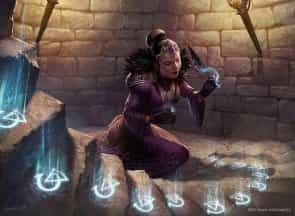

- 3 уровень, ограждение
- Время накладывания: 1 час
- Дистанция: Касание
- Компоненты: В, С, М (благовония и растолчённый бриллиант, стоящий как минимум 200 зм, расходуемый заклинанием)
- Длительность: Пока не рассеяно или не сработает
- Классы: бард, волшебник, жрец, изобретатель
Когда вы накладываете это заклинание, вы рисуете руну, впоследствии выпускающую магический эффект. Руна рисуется либо на поверхности (такой как стол или часть пола или стены) либо в предмете, который можно закрыть (книга, свиток или сундук с сокровищами), спрятав, таким образом, руну. Руна может покрывать площадь диаметром не больше 10 футов. Если предмет или поверхность переместят более чем на 10 футов от того места, где вы накладываете заклинание, руна сломается, и заклинание окончится, не срабатывая.
Руна практически невидимая, и для её обнаружения требуется успешная проверка Интеллекта (Расследование) против Сл ваших заклинаний.
Вы решаете, что вызовет срабатывание руны, когда накладываете заклинание. Руны, написанные на поверхности, обычно срабатывают от касания, вставания на нее, снимания предмета, стоящего на руне, приближения на определенное расстояние, или манипулирования предметом, на котором начертана руна. Для рун, начертанных внутри предметов, чаще всего выбирают открывание, приближение на определенное расстояние, взгляд, брошенный на руну или попытку её прочтения. После того как руна сработает, заклинание оканчивается.
Вы можете внести уточнения, чтобы заклинание срабатывало только в определенных обстоятельствах или при соблюдении внешних признаков (таких как рост и вес), вид существа (например, руна может защищать только от Аберраций и дроу), или мировоззрение. Вы можете также определить условия, при которых существо не будет активировать руну, например, произношение пароля.
Когда вы наносите руну, выберите взрывную руну или заклинательную руну.
Взрывная руна. Когда эта руна срабатывает, она испускает магическую энергию сферой с радиусом 20 футов с центром на руне. Эта сфера огибает углы. Все существа в этой области должны совершить спасбросок Ловкости. Существо получает урон звуком, кислотой, огнём, холодом или электричеством 5к8 при провале (тип урона вы выбираете при начертании руны) или половину этого урона при успехе.
Заклинательная руна. Вы можете сохранить подготовленное заклинание с уровнем не выше 3-го в руне, наложив его частью начертания руны. Заклинание должно нацеливаться на одно существо или область. При этом заклинание временно не вступает в силу. Когда руна срабатывает, хранящееся заклинание активируется. Если у заклинания есть цель, целью становится существо, вызвавшее срабатывание руны. Если заклинание действует на область, центр этой области будет на этом существе. Если заклинание призывает враждебных существ или создает вредоносные предметы или ловушки, они появляются как можно ближе к нарушителю и атакуют его. Если заклинание требует концентрации, оно длится до конца своей максимальной длительности.
На больших уровнях. Если вы накладываете это заклинание, используя ячейку 4-го уровня или выше, урон от взрывной руны увеличивается на 1к8 за каждый уровень ячейки выше третьего. Если вы накладывали заклинательную руну, вы можете хранить в ней заклинание вплоть до уровня, равного уровню ячейки, использованной для накладывания охранной руны.
Охранная руна — Заклинания
Охранная руна [Glyph of warding]PH14 PH24
Галерея

Комментарии
например
1-я руна болезненное сияние активация наступить в область действия
2-я руна силовая стена активация после срабатывания 2-й руны
равно автоматическая микроволновка
Это заклинание привязывается к месту где его наложили или только к предмету или поверхности на которое оно наложено?
Или я могу сделать гранату из охранной руны?
Накладывается целый час. При этом если предмет с руной удалится на 10+ футов от места наложения - эффект пропадёт. В итоге единственная возможность - заранее заготавливать её и "байтить" на неё врагов или указывать союзникам (если это бафф).
Я то думал, что можно будет условному монаху дать книжку с руной, он убежит в бою и там уже его активирует...
А каким раком руна вообще видит? И слышит? Она скрытных типов увидит? А маскировку?
Получается, по логике, можно залезть в дыру и либо написать там сразу руны, либо взять с собой книжку, написать руны в ней, и оставить.
Далее мы закрываем дыру, а руны то остаются на одном и том же месте в демиплане.
И получается мы в любой нужный момент открываем дыру, прыгаем в нее, активируем руны и вуаля, вы профессиональный минмаксер
Или я понимаю что-то не так?
P.S. Интересно разрабы сайта введут возможность редактировпния своих комментов?
Нужен для такого мува закл. "демиплан". Да в устройстве сумки хранения явно как-то задействован астральный план, но не напрямую.
Также очень проблемная формулировка "Если предмет или поверхность переместят более чем на 10 футов от того места, где вы накладываете заклинание, руна сломается" т.к. не ясно что принимать за точку отсчета. Как вот оно будет работать, если наложить охранную руну на корабль или лифт.
В общем я думаю, игрокам оно нужно только если вы (как и я) любите прыгать через обруч, чтобы обойти ограничение на концентрацию и накладывать на себя миллиард бафов. Или делать ядерную бомбу.
О вышеперечисленном ниже.
В смысле что принимать за точку отсчёта? Точку в пространстве в которой предмет/поверхность корабля находились при накладывании, на лифте и корабле руна сразу сломается.
Ну либо пьяный угар и выбирай для любого предмета за точку отсчёта царапинку/пылинку/козявку на предмете, неси куда хошь и говори что ну предмет же не перемещается относительно этой козявки, значит с руной всё норм.
Т.е. точкой отсчет можно выбрать движимый объект. Однако как указано в примере в описании этого заклинания, такой маленький и явно движимый объект как сундук не подходит. Где та грань когда руну накладывать уже можно?
Выбираешь точкой отсчета просто точку в пространстве т.к. планета вращается, руна ломается МОМЕНТАЛЬНО ))).
Есть видос где освещается проблематика данная: https://www.youtube.com/watch?v=CgtAAPZHbBo
Однако такое бесполезно поскольку переместить такую руну не выйдет и царь бомба (или набор рун с миллионов бафов) не использованной будет лежать на базе. Но вот как обойти это ограничение, хотя обойти его весьма сложно и затратно.
1. Закл. "исполнение желаний". Наложить охранную руну через "исполнение желаний" это и безопасно и позволит прямо в бою наложить бафф/дебафф без ограничения на концентрацию.
2. Закл. "демиплан". Наложите руну в демиплане. В бою просто откройте демиплан произнесите кодовое слово (для активации рун) и оттуда вылетит либо вся мощность магической царь бомбы, если открыли его перед лицом противника, либо миллион бафов без концентрации, если открыли его рядом с собой.
3. Умение Колдуна (Гения) "сосуд гения", а конкретно "Передышка на дне бутылки"
4. Далее будет спорный способ, но он доступен всем волшебникам.
Ограничение охранной руны на 10 футов от точки наложения можно обойти. Поскольку в формулировке заклинания сказано "переместят больше чем на 10 футов", а не "окажется на расстоянии больше 10 футов". То нам нужно наложить руну на некий предмет, но не перемещать его, а телепортировать его без перемещения.
Кто-то скажет это одно и тоже, но нет. В заклинаниях в днд всегда есть разница между "переместиться на расстояние более..." и "окажется на расстоянии дальше чем..." (да и глобально если смотреть на этот вопрос перемещения существ провоцируют атаки по возможности, а их телепортация от вас нет), да и заклинания которые не только не дают перемещаться но и блокируют телепорты и планарные перемещения отдельно это обговаривают.
Поэтому для телепортации такого объекта нам подойдет следующее:
-Умение мистического рыцаря "связь с оружием"
-Заклинание Леомундов потайной сундук
-Заклинание Дромиджево появление
-Заклинание призыв высшего демона. Если вы смогли призвать одного и того же демона и как-то сделкой договориться с ним, то можете передать ему предмет с руной, отправить его на свой план. Там он положить предмет на землю не перемещая его на 10 футов, а при след призыве демон возьмет его в бой.
-Поиск фамильяра. Если ваш мастер разрешает фамильяру прятаться в его карманном измерении вместе с предметами, которые несет или носит фамильяр, то передайте фамильяру предмет с руной. и потом вызовите фамильяра в нужном месте.
Волшебник: Я хочу наложить охранную руну на текст. На того кто его прочитает будет наложено слово силы смерть
Мастер: Хорошо, а что это за текст?
Волшебник: "Кто прочитал тот сдохнет"